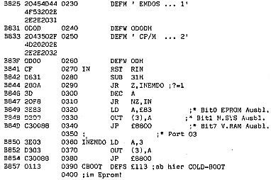

80-Bus Journal |
Jan/Feb/März 1984 · Ausgabe 1 |

Im Augenblick sind 2 Floppy’s als Leserservice (Format in Heft 12/83 beschrieben) lieferbar. Sie enthalten folgende Files:
DISK0 (Systemdiskette)
| EMDOS.ASSEMBLER | PHEAS.ASSEMBLER |
| WBOOT.ASSEMBLER | CBOOT.ASSEMBLER |
| NASGEN.ASSEMBLER | FORMAT.ASSEMBLER |
| READTRK.ASSEMBLER | STAT.ASSEMBLER |
| NASGEN.COMMAND | READTRK.COMMAND |
| FORMAT.COMMAND | STAT.COMMAND |
| SRLOUT.ASS | BACKUP.ASS |
| BACKUP.COM |
jeweils die neuesten Versionen. Die System-Spuren enthalten WBOOT und EMDOS, sodaß mithilfe des abgedruckten CBOOT (Heft 12/83) direkt gebootet werden kann. Das Eintippen der übrigen Programme können Sie sich dann sparen.
Die Diskette ist für DM 20.– (incl MWSt, Porto und Verpackung) erhältlich. Bestellung durch Überweisung auf unten stehendes Konto.
DISK1 Programme aus Heft 1/84 und Assembler-Programme, die wegen der Länge nicht abgedruckt werden konnten:
| GRAFIK.BAS | GRAFCOPY.ASS |
| READIN.ASS | MONITOM.ASS |
| BREAKOUT.ASS | PACMAN.NAS |
| PACMAN.ASS | PACGRAF.ASS |
| PACMAN.DOC | VIERECK.ASS |
| MAEDCKIN.NAS | T4DRIVER.ASS |
| VIERECK.DOC | READIN.NAS |
| TEXTCASS.ASS | TOOLMOM.NAS |
| STERNE.PAS |
Ca. 128 KBytes, deren Abtippen Sie sich sparen können. DISK1 können Sie durch Überweisung von DM 15.– auf folgendes Konto erhalten:
______-___ Gabi Böhm PSchA ____
| Seite 50 von 52 |
|---|